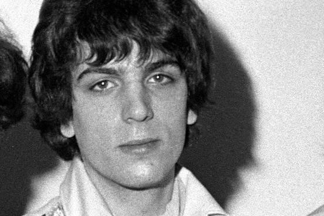
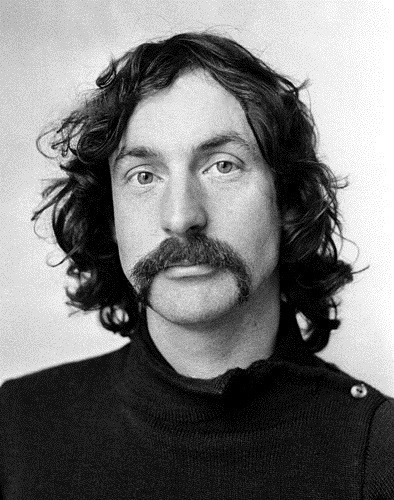
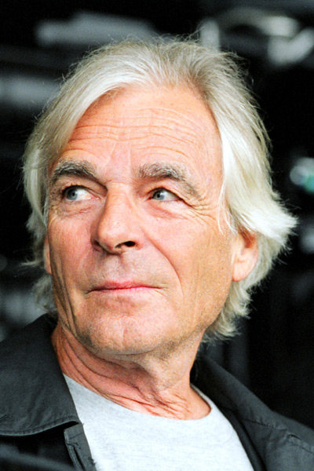

Biographie
Précisions à propos de chaque artiste
Membres du groupe
-
Syd Barrett
Syd Barrett, est un auteur-compositeur-interprète né le 6 janvier 1946 à Cambridge et y est mort le 7 juillet 2006. Il avait 60 ans quand il est mort. Il était le leader du groupe Pink Floyd de ses débuts à son éviction en 1968.
Pink Floyd
En 1965, Syd Barett Rejoint son copain d'enfance Roger Waters dans le groupe Pink Floyd... Pendant plusieurs années, Le groupe allait très bien jusqu'a ce que Syd Barett se mit a une très forte consomation de LSD, ce qui lui coutera sont expultion en 1968.
 -
David Gilmour
David Jon Gilmour, né le 6 mars 1946 à Grantchester, près de Cambridge, est un auteur-compositeur-interprète. Il est connu pour avoir été le guitariste et le chanteur au sein du groupe Pink Floyd. David a également été nommé « meilleur musicien sur guitare Fender de tous les temps »
A l'origine, David gilmour jouait dans un groupe nommé "les Rambles".
Il a joué avec eux pendant 1 an (1965-1966) et ne sortirent qu'un seul disque non officiel.
Pink Floyd
En janvier 1968, Dave a rejoint le groupe Pink-Floyd suite a la demande de Nick Mason pour jouer en même temps que Syd Barett. Il sera en partie responsable du succès de Pink Floyd dans les années 70 notamment grace a sa voix et ses talents de guitariste.

-
Nick Mason
Nicholas Berkeley Mason, dit Nick, est un batteur britannique né le 27 janvier 1944 à Birmingham. Il est le batteur du groupe, dont il est l'un des membres fondateurs et le seul membre permanent. C'est également un passionné de course automobile, qui a participé à plusieurs reprises aux 24 Heures du Mans..
Pink Floyd Nick Mason renconntre Roger Waters et Richard Wright Lorsqu'il étudie en polytechnique. Il participait a toutes les tournées de Pink Floyd et de temps a autre dans celle de Roger Waters et de David Gilmour.
 -
Roger Waters
Roger Waters né le 6 septembre 1943 à Great Bookham est un auteur-compositeur-interprètemembre. Il est fondateur et bassiste du groupe Pink Floyd. Il chante, fait de la guitare de la basse. cliquez ici pour aller sur la page Matériel pour plus de Précisions.
Pink Floyd Roger Waters Créé Pink Floyd en 1965 et il est sourtout connu pour l'écriture de ces disques, sa voix et son talent a la guitare.
-
Richard Wright
Richard William Wright ou Rick Wright est un auteur-compositeur-interprète anglais né le 28 juillet 1943 et décede 61 ans plus tard le 15 septembre 2008. il est l'un des membres fondateurs du groupe. Il chante généralement en harmonie avec David Gilmourd.

Pink Floyd En 1962, alors qu'il étudie dans la même école que Nick Mason et Roger waters, il font connaisance et en 1965, il rejoint également le groupe car ses études ne l'intèrresait pas. Il était dit qu'il était discret et réservé.